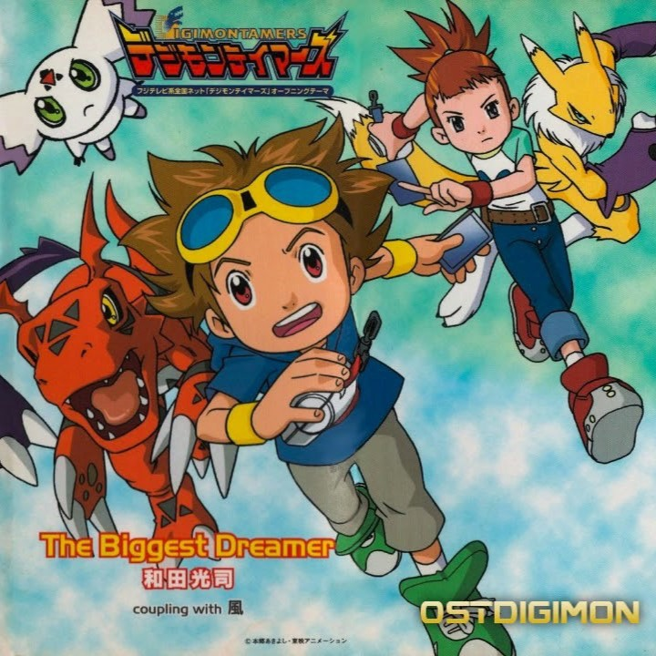
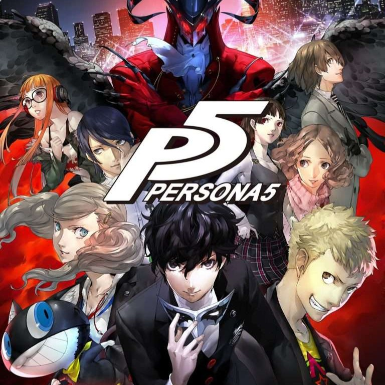
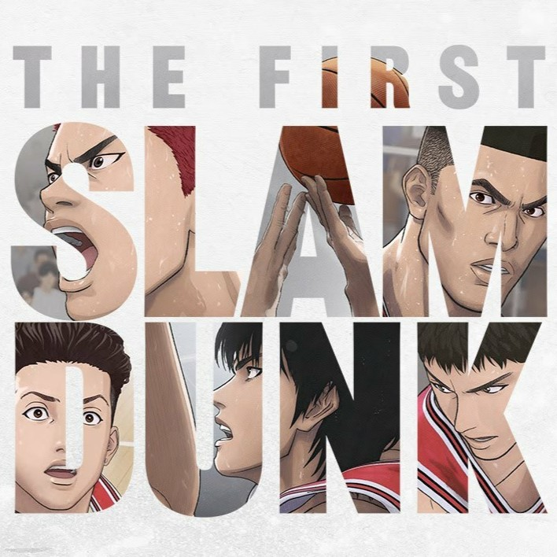
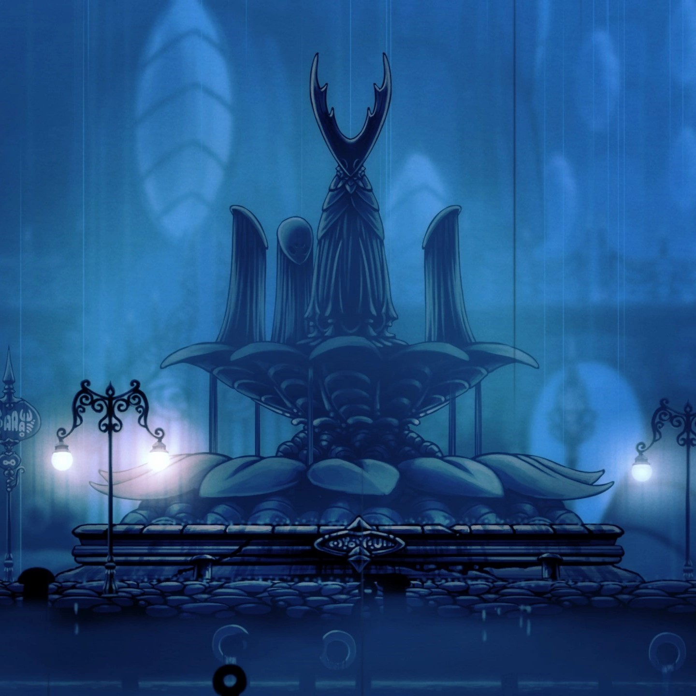
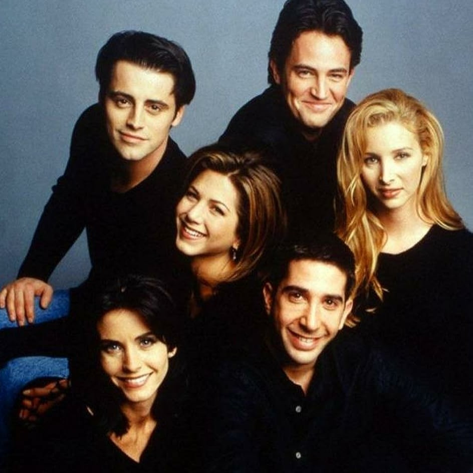
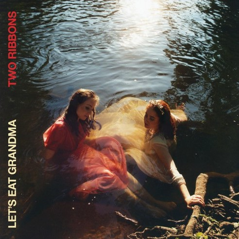
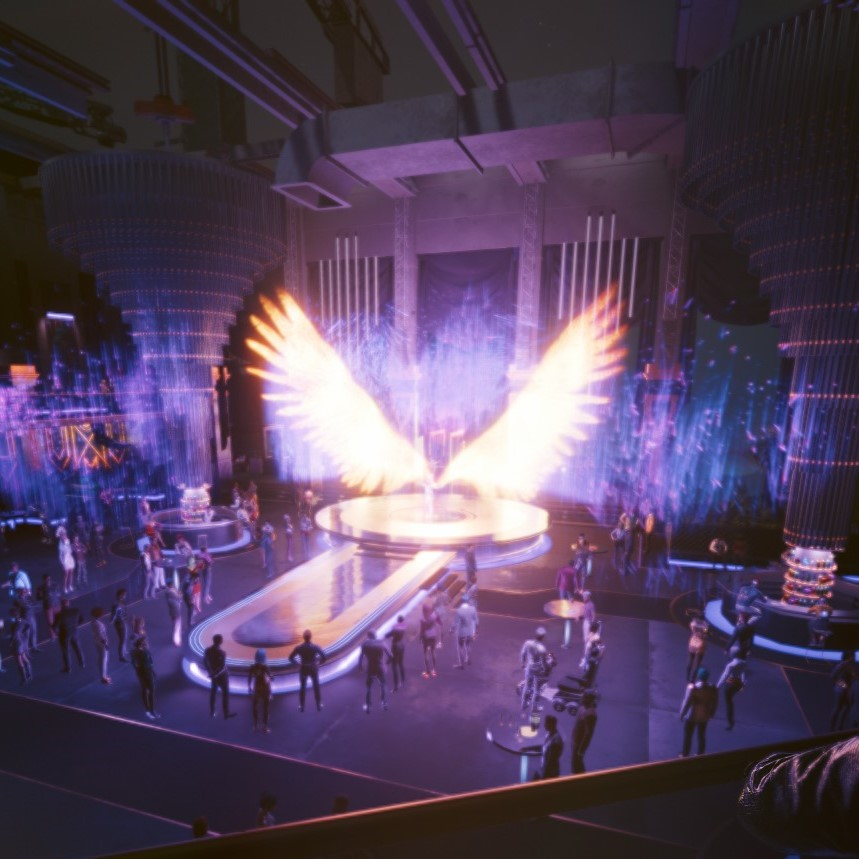

我最喜欢的10首音乐作品-2023年
我最喜欢的10首音乐作品-2023年
My Top 10 Favorite Music Pieces (MFM) - 2023 补。
01 The Biggest Dreamer
《数码宝贝03驯兽师之王》OP。由老数码宝贝系列御用op歌手和田光司呈现。该剧集是我最喜欢的数码宝贝剧集。其OP也我是我心中第二的数码宝贝音乐作品。我最喜欢的数码宝贝音乐仍然来自该剧集，不过这首BGM是即兴原创，所以并未收录在OST中，也没有名字。悠扬的女声吟诵中，樱花漫天飞舞，随着一片花瓣飘落在水中明月之上，妖狐兽进化为了沙古牙兽。

02 Treasure Pleasure
强而有力，强而有力！《范马刃牙》监狱篇OP。2023年，《范马刃牙》动画堂堂完结。由于经费原因，刃牙系列动画完全不能还原刃牙漫画的神髓。但是，便宜动画应当搭配高级op食用。
03 Life Will Change
《女神异闻录5》的插曲之一。对我而言，《女神异闻录5》的美术、音乐的高技术力、高水准远超其JRPF玩法本身。

04 第ゼロ感
《男儿当入樽》电影主题曲。且不论极其优秀的漫画原作，电影水准3D渲染水准非常高，我非常喜欢，为其贡献了三张电影票。

05 City of Tears
《空洞骑士》BGM。圣巢的首都在瘟疫之后了无生机。一尊肃穆的空洞骑士雕像将这座城市按照阶级划分为两半，其中一侧是一扇紧闭的大门。大门之后，曾经尝试通过物理隔离终止瘟疫蔓延的昔日贵族们意识到一切都是徒劳无功，要么无精打采失魂落魄，要么神经紧绷步入疯狂。落寞之中，悠扬的歌声从欢愉之屋传来。那歌声的主人是名叫玛丽莎的魂灵。除此之外，是绵绵不绝的雨声，在灵魂圣所能听到，在守望之塔能听到，在国王驿站能听到。圣巢上层的蓝湖之水，正渗透土壤淅淅沥沥的落下。那不是雨，是圣巢的眼泪。

06 I’ll Be There For You
经典情景喜剧《老友记》的主题曲。Chandler是我在该剧中最喜欢的角色。其演员，Matthew Perry，于今年不幸去世。而恰巧，当时我正在重温整部剧集。由于我不跳《老友记》主题曲，所以这首歌我听了约230遍左右。

07 One Day
《海贼王》OP。因为偶然，我重新关注起了《海贼王》。海贼王是我初中时追更的动漫作品，也是所谓的三大民工漫画中我唯一能看下去的一部。然而，很不幸，“两年后”的鱼人岛、庞克哈萨德连续两个篇章表现平庸，导致我一弃坑就是十年。现在续看，仍然觉得“两年后”水准不如以往并逐渐显现显露疲态。目前剧情似乎正往一个让人失望的方向狂奔。由衷希望海贼王不要烂尾。所有op当中，我最喜欢的仍是我的初见op，one day。我对海贼王最好的记忆，估计会永远停留在艾斯的背影之上。
08 Levitation
《赛博朋克2077》衍生动画《边缘行者》 让 I really want to stay at your house 这首歌名声大噪。其表演者 let’s eat grandma作为一支录音室乐队，其风格确实别具一格。尽管我对电子乐兴趣缺缺，但在我完整品鉴其2018年和2022年的两张专辑，其中levitation是我最喜欢的一首。

09 Delicate Weapon
《赛博朋克2077》dlc《往日之影》极其优秀，远超预期。高水准的演出表现为整体故事叙述增色不少。其中，在宝石青顶楼的名流派对让人印象深刻，尤其是其间的歌舞表演，由夜之城明星 Lizzy Wizzy 倾情表演。在2077年的全息投影技术之下，这场表演让大名鼎鼎的V驻足良久。这首歌被夜之城体温电台收录。

10 Love Is A Long Road
年末炸弹 — GTA6预告片发布。距离GTA5发售已过去了10年。距离 Red Dead Redemption 2 发售已经过去了5年。非常期待2年之后 GTA6发售日的到来。